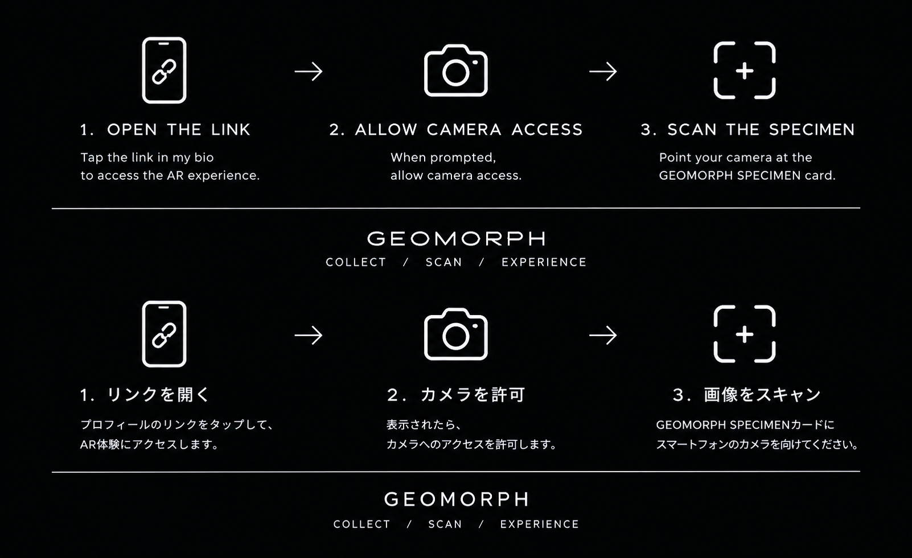

GEOMORPH
COLLECT / SCAN / EXPERIENCE
GEOMORPH SPECIMEN
LATTIS

HOW TO EXPERIENCE / 体験方法


SCAN TO REVEAL
Instagramからお越しの方へ： このページがInstagram内のブラウザで開いている場合、右上のメニューから「ブラウザで開く」を選び、SafariまたはChromeで開いてからお試しください。
For Instagram users: If this opened inside the Instagram app, tap the menu (•••) and choose “Open in Browser” — then use Safari or Chrome for the best experience.